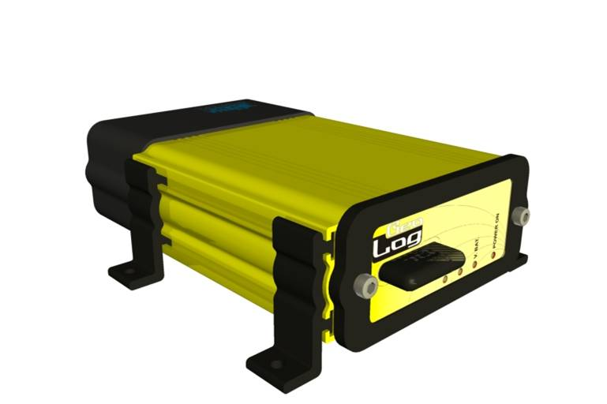

Geolog registra constantemente en su memoria una serie de eventos y mediciones que permiten analizar, evaluar y reproducir todo lo ocurrido durante un lapso de tiempo en un vehículo de cualquier tipo. Dichos eventos y mediciones son almacenados en una memoria interna de 64 MB, ampliable a 128 MB. La información puede extraerse del equipo en forma remota por radiofrecuencia, mediante una unidad de recopilación de datos. Esta unidad opera a corta distancia del vehículo (no más de 20 metros). Opcionalmente, los datos se pueden obtener a través de una conexión Internet, para lo cual el equipo cuenta con un celular integrado operando en la banda GSM-GPRS. En este caso, si bien tiene un costo asociado, tiene la ventaja de poder realizarse sin importar la ubicación del móvil y de acceder a la situación actual del mismo en tiempo real. Una vez que los registros se encuentran en la unidad de recopilación de datos, ésta se conecta a una PC para su procesamiento y visualización en pantalla. Geolog está conformado por tres partes: Unidad de Registro (instalada en el vehículo), Unidad de Recopilación de Datos (dispositivo portátil de mano, puede tomar datos de múltiples móviles), y Software de Visualización de Datos.
Unidad de registro
Esta unidad va instalada y conectada en el vehículo. Los datos que se registran, ya sea en forma interna o a través de la bornera de conexión son los siguientes:
- Ubicación geográfica y recorrido (mediante GPS interno)
- Velocidad
- Fecha y hora de cada evento
-
6 entradas de
tensión de amplio rango, utilizables para medición de
por ejemplo:
- Temperatura de Motor
- Presión de Aceite
- Temperatura de Refrigerante
- Temperatura de Aceite
- Otros parámetros según el tipo de vehículo
-
8 entradas
digitales, utilizables para medición de por ejemplo:
- Contacto de Ignición
- Apertura de Puertas
- Bulbos de presión de aceite
- Detección de encendido de dispositivos
- Medición de consumo de combustible
- Cualquier evento que se traduzca en presencia de tensión.
- Aceleración: Se registran datos de aceleración, tanto longitudinal como lateral. Esto permite registrar frenadas bruscas y curvas con exceso de velocidad, como así también detectar si el vehículo se encuentra en movimiento, en caso de que se hubiera anulado la antena GPS.
El dispositivo posee además 2 conexiones de comunicación:
- Entrada para Bus CAN: Permite conectar hasta 128 dispositivos de medición adicionales.
- Entrada RS232 : Puerto serie utilitario para dispositivos con esta norma.
Por otra parte, la bornera de conexión incluye las siguientes salidas para realizar acciones o señalización:
- 2 Salidas digitales con capacidad para encender lámparas de indicación tipo LED
- 4 Conexiones para manejar dispositivos de alta potencia, como relés, motores, lámparas o actuadores electromecánicos, con potencia hasta 50 watts.
Finalmente, cuenta con dos salidas de antena, una para el sistema GPS y otra para la comunicación de datos por red celular. La antena para la conexión con la unidad de recopilación de datos a corta distancia se encuentra integrada en el gabinete. Las principales características de Geolog son:
-
Invulnerabilidad: En el diseño se contempló que dada su
función de contralor, este dispositivo puede ser objeto
de ciertos tipos de sabotaje. Teniendo en cuenta esta
circunstancia, se incluyeron características como:
- Detección de corte intencional de antena GPS
- Batería interna para funcionamiento sin energía durante 7 días
- Protección contra descargas eléctricas en todas las entradas/salidas
- Detección de movimiento del vehículo sin antena GPS
- Gabinete metálico blindado
- Instalable en sitios poco accesibles del vehículo, por no necesitar acceso al mismo para la extracción de los datos
- Alta flexibilidad de operación: Mediante un archivo de configuración se definen las pautas operativas del equipo, adaptándolo fácilmente a las necesidades de distintas aplicaciones
- Gran capacidad de almacenamiento: Disponiendo de una memoria de 32 a 128 megabytes, puede registrar y almacenar datos durante meses en forma continua.
- Sencillez de operación: El proceso de extracción de datos de uno o varios vehículos se lleva a cabo en forma rápida y sin necesidad de operadores capacitados
- Interfaz de usuario altamente programable: El software diseñado para la visualización de la información recopilada, permite al usuario definir niveles de alerta para cada uno de los parámetros registrados, a fin de que el análisis de los mismos requiera un mínimo de atención.
- Alta confiabilidad: Los elementos electrónicos que conforman el dispositivo son de última generación, garantizando un excelente desempeño en cualquier ambiente
- Posibilidad de cargar versiones actualizadas de software: Los programas internos que definen las principales características operativas de Geolog pueden ser actualizados mediante la unidad remota o bien a través de la conexión Internet
Unidad de Recopilación de Datos
Este dispositivo de reducido tamaño, operado por una batería de 9V, se utiliza para tomar los datos registrados en el o los vehículos.
La transferencia se hace por ondas de radiofrecuencia, desde una distancia máxima de 20 metros al vehículo. Dispone de un visor (display de cuarzo) y cinco teclas, con las que se realizan todas las acciones necesarias. Los datos se almacenan en una tarjeta de memoria tipo SD (muy utilizadas en cámaras digitales). La transferencia de dichos datos a una PC para su posterior procesamiento o visualización se implementa mediante un típico lector de tarjetas SD, conectado a la PC por un puerto USB. La capacidad de la tarjeta SD es típicamente de 128 MB, aunque se pueden utilizar capacidades de 512 o 1024 MB si se procesan altos volúmenes de información. Esta unidad también permite enviar información al móvil, lo cual es necesario ocasionalmente para configurar parámetros operativos de la unidad de registro o para actualizar el software de la misma.
Software de procesamiento y visualización
Geolog Desktop, desarrollado específicamente para Geolog, permite visualizar y analizar en forma rápida y eficiente los datos recabados de los vehículos. Geolog Desktop presenta los recorridos sobre planos o mapas, resaltando eventos especiales o anormales. Permite definir los parámetros normales dentro de los cuales debe mantenerse un vehículo, y genera alarmas sonoras o visuales en caso de ser necesario. Las herramientas incluidas permiten al usuario apreciar de un golpe de vista las situaciones anormales, que requieran una atención especial, hacer un análisis de las velocidades, tiempos de detención y consumo de combustible. Geolog Desktop es compatible con Google Earth, permitiendo visualizar el recorrido del móvil sobre fotos satelitales, pudiendo observar el mismo a lo largo de un continente, un país o dentro de una ciudad. Geolog Desktop, brinda las herramientas necesarias para examinar en cuestión de segundos los datos registrados durante horas, días o meses de un vehículo.